5.5 Part4
# 빈도수 막대 그래프 그리기
# x가 이산형
ggplot(diamonds, aes(x = cut)) + geom_bar()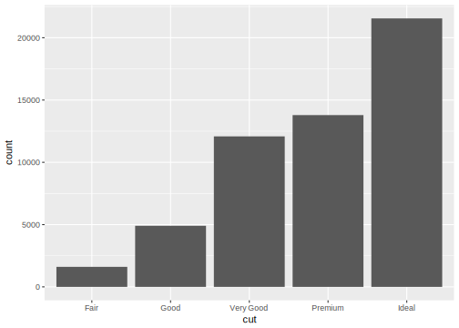
# x가 연속형
ggplot(diamonds, aes(x = carat)) + geom_bar()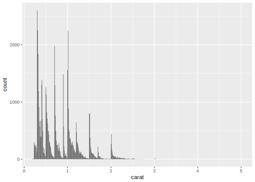
# 막대 색상 넣기/ 축 이름 정의하기(reorder)
upc <- subset(uspopchange, rank(Change) > 40)
ggplot(upc, aes(x = reorder(Abb, Change), y = Change, fill = Region)) + geom_bar(stat = "identity", color = "black") +
scale_fill_manual(values = c("#669933", "#FFCC66")) + xlab("State")
# 양수/음수 다른 색상으로 표현 (구분 inde를 만들어 색상 변수로 지정)
csub <- subset(climate, Source == "Berkeley" & Year >= 1900 )
csub$pos <- csub$Anomaly10y >= 0
ggplot(csub, aes(x = Year, y = Anomaly10y, fill = pos)) + geom_bar(stat = "identity", position = "identity")
# 막대 그래프 테두리 두께 설정(size) / 범례 지우기(guide = FALSE)
ggplot(csub, aes(x = Year, y = Anomaly10y, fill = pos)) + geom_bar(stat = "identity", position = "identity", color = "black", size = 0.0001) +
scale_fill_manual(values = c("#CCEEFF", "#FFDDDD"), guide = FALSE)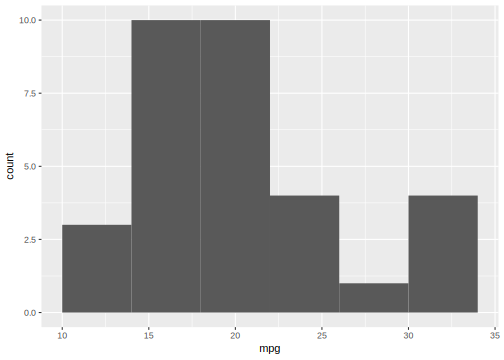
# 막대 너비/ 간격 조절하기(width : 최대 너비는 1)
ggplot(pg_mean, aes(x = group, y = weight)) + geom_bar(stat = "identity", width = 0.5)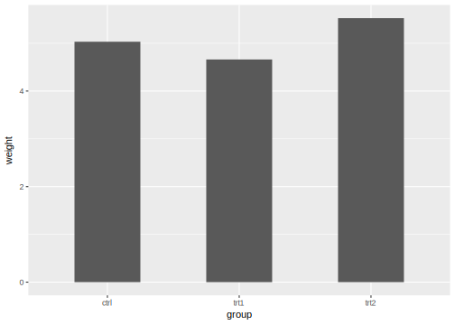
# 막대 그룹 간의 간격 조절하기 (default : 0.9)
ggplot(cabbage_exp, aes(x = Date, y = Weight, fill = Cultivar)) + geom_bar(stat = "identity", width = 0.4, position = "dodge")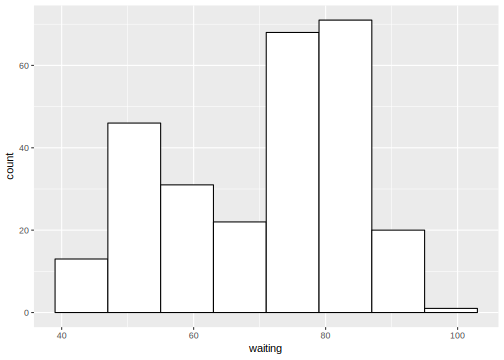
# 막대 그룹 내부간의 간격 조절 (default : 0.9)
ggplot(cabbage_exp, aes(x = Date, y = Weight, fill = Cultivar)) + geom_bar(stat = "identity", width = 0.3, position = position_dodge(0.5))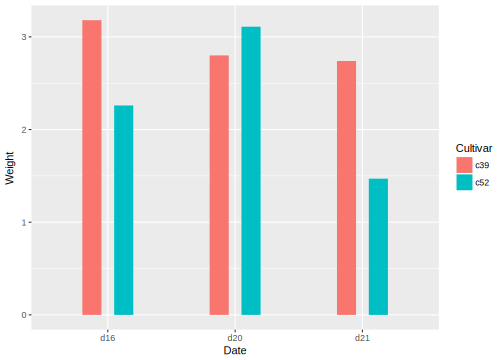
# 범례 순서 바꾸기 (reverse = TRUE)
ggplot(cabbage_exp, aes(x = Date, y = Weight, fill = Cultivar)) + geom_bar(stat = "identity") + guides(fill = guide_legend(reverse = TRUE))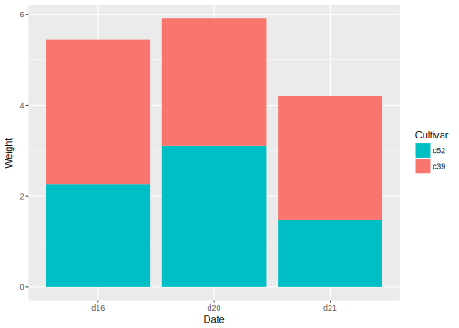
# 막대 쌓는 순서 바꾸기
ggplot(cabbage_exp, aes(x = Date, y = Weight, fill = Cultivar, order = desc(Cultivar))) + geom_bar(stat = "identity")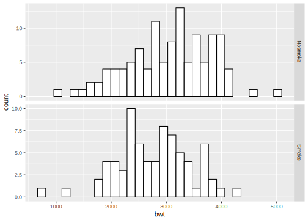
# 비율 누적 막대 그래프 그리기(막대 전체가 100%가 되도록)
ce <- ddply(cabbage_exp, "Date", transform, percent_weight = Weight / sum(Weight) * 100)
ggplot(ce, aes(x = Date, y = percent_weight, fill = Cultivar)) + geom_bar(stat = "identity")
# 막대에 라벨 추가하기 [ geom_text ]
# 선 상단 [ vjust < 0 ]
ggplot(cabbage_exp, aes(x = interaction(Date, Cultivar), y = Weight)) + geom_bar(stat = "identity") +
geom_text(aes(label = Weight), vjust = -0.2)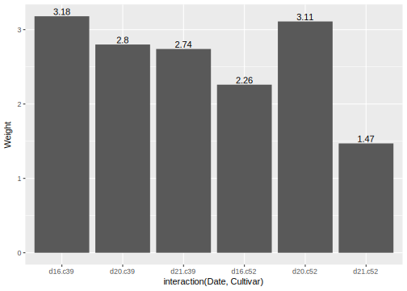
# 선 하단 [ vjust > 0 ]
ggplot(cabbage_exp, aes(x = interaction(Date, Cultivar), y = Weight)) + geom_bar(stat = "identity") +
geom_text(aes(label = Weight), vjust = 1.5, color = "white")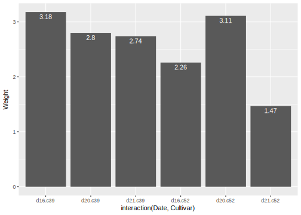
# 그래프 범위 설정
# max(데이터)로 지정
ggplot(cabbage_exp, aes(x = interaction(Date, Cultivar), y = Weight)) + geom_bar(stat = "identity") +
geom_text(aes(label = Weight), vjust = -0.2) + ylim(0, max(cabbage_exp$Weight) * 1.05)
# 막대의 상단보다 조금 높은 위치로 지정(데이터에 따라 자동 조정)
ggplot(cabbage_exp, aes(x = interaction(Date, Cultivar), y = Weight)) + geom_bar(stat = "identity") +
geom_text(aes(y = Weight + 0.1, label = Weight)) 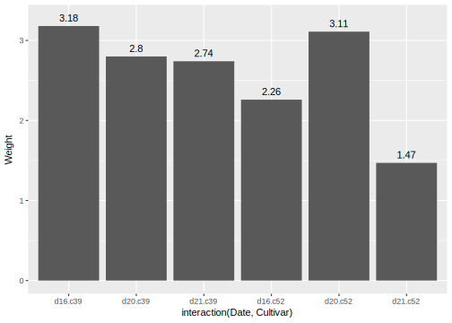
# 누적 합계 그래프 그리기
ce <- arrange(cabbage_exp, Date, Cultivar)
ce <- ddply(ce, "Date", transform, label = cumsum(Weight))
# ddply(data.frame, 그룹 기준 마지막 변수)
ggplot(ce, aes(x = Date, y = Weight, fill = Cultivar)) + geom_bar(stat = "identity", color = "black") +
geom_text(aes(y = label, label = paste(format(Weight, nsmall=2), "kg")), size = 6, vjust = 1.5) +
guides(fill = guide_legend(reverse = TRUE)) + scale_fill_brewer(palette = "Pastel1")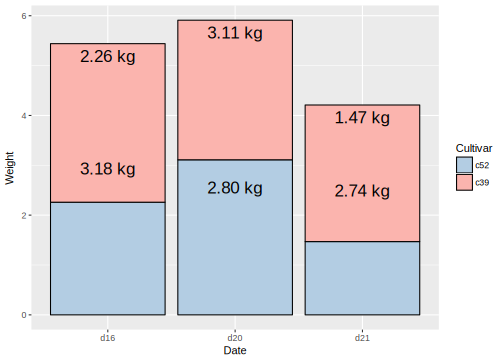
######################################################################################
## histogram (geom_histogram)
######################################################################################
hist(mtcars$mpg)
# 상자(bin) 개수 지정
hist(mtcars$mpg, breaks = 10)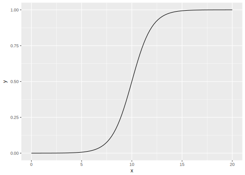
qplot(mpg, data = mtcars, binwidth = 4)
# ggplot(mtcars, aes(x = mpg)) + geom_histogram()
ggplot(mtcars, aes(x = mpg)) + geom_histogram(binwidth = 4)
h <- ggplot(faithful, aes(x = waiting))
h + geom_histogram(binwidth = 8, fill = "white", color = "black", origin = 31)## Warning: `origin` is deprecated. Please use `boundary`
## instead.
## Warning: `origin` is deprecated. Please use `boundary` instead.
# 그룹화된 데이터로 여러개의 히스토그램 만들기
library(MASS)
ggplot(birthwt, aes(x = bwt)) + geom_histogram(fill = "white", color = "black") + facet_grid(smoke ~ .)## `stat_bin()` using `bins = 30`. Pick better value
## with `binwidth`.
## `stat_bin()` using `bins = 30`. Pick better value with `binwidth`.
ggplot(birthwt, aes(x = bwt)) + geom_histogram(fill = "white", color = "black") + facet_grid(smoke ~ .)## `stat_bin()` using `bins = 30`. Pick better value
## with `binwidth`.
## `stat_bin()` using `bins = 30`. Pick better value with `binwidth`.
# 그룹 라벨 정의
birthwt1 <- birthwt
birthwt1$smoke <- factor(birthwt1$smoke)
levels(birthwt1$smoke)## [1] "0" "1"## [1] "0" "1"
birthwt$smoke <- revalue(birthwt1$smoke, c("0" = "Nosmoke", "1" = "Smoke"))
ggplot(birthwt, aes(x = bwt)) + geom_histogram(fill = "white", color = "black") + facet_grid(smoke ~ ., scales = "free")## `stat_bin()` using `bins = 30`. Pick better value
## with `binwidth`.
## `stat_bin()` using `bins = 30`. Pick better value with `binwidth`.
######################################################################################
## boxplot (geom_boxplot)
######################################################################################
boxplot(len ~ supp, data = ToothGrowth)
qplot(ToothGrowth$supp, ToothGrowth$len, geom = "boxplot")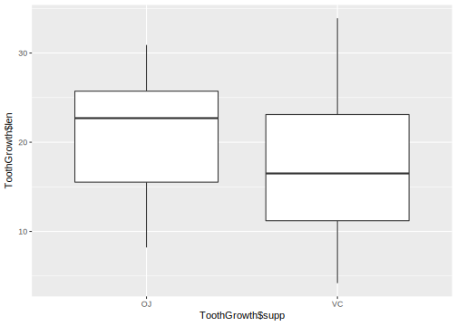
ggplot(ToothGrowth, aes(x = supp, y = len))+ geom_boxplot()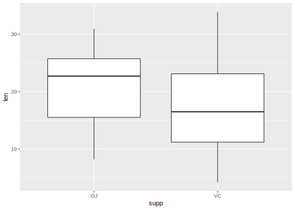
# 두 변수의 상호작용을 X축으로
boxplot(len ~ supp + dose, data = ToothGrowth)
qplot(interaction(ToothGrowth$supp, ToothGrowth$dose), ToothGrowth$len, geom = "boxplot")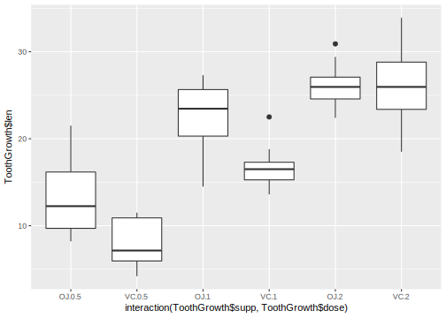
ggplot(ToothGrowth, aes(x = interaction(supp, dose), y = len)) + geom_boxplot()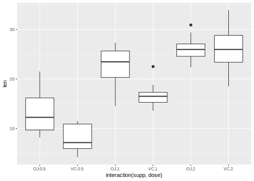
######################################################################################
## 함수곡선 그리기 (stat_function)
######################################################################################
# 사용자함수 정의
myfun <- function(xvar){
1/(1 + exp(-xvar + 10))
}
curve(myfun(x), from = 0, to = 20)
curve(1-myfun(x), add = TRUE, col = "red")
# qplot(c(0,20), fun = myfun, stat = "function", geom = "line")
ggplot(data.frame(x = c(0,20)), aes(x =x)) + stat_function(fun = myfun, geom = "line")